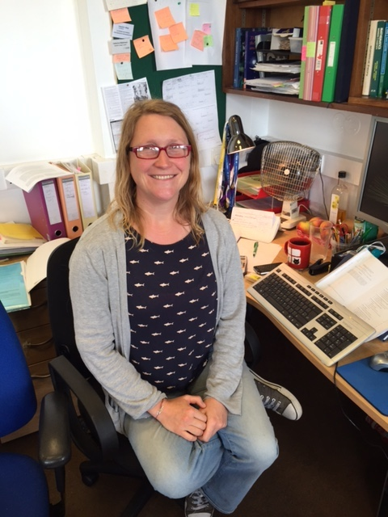
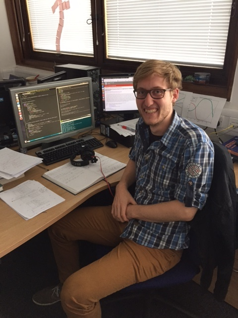

Research Group
If you're interested in working with me, please check out this page for possible opportunities.
Postdocs
 |
Emma Chapman RAS Fellow |
| Suman Majumdar ERC Postdoc | |
|  | Catherine Watkinson UCL Postdoc Imperial PhD student (2011-2015) |
Students
|  | Claude Schmit Imperial PhD student (2015-) |
Past students
Martin Rey, Paris, Imperial MSc.